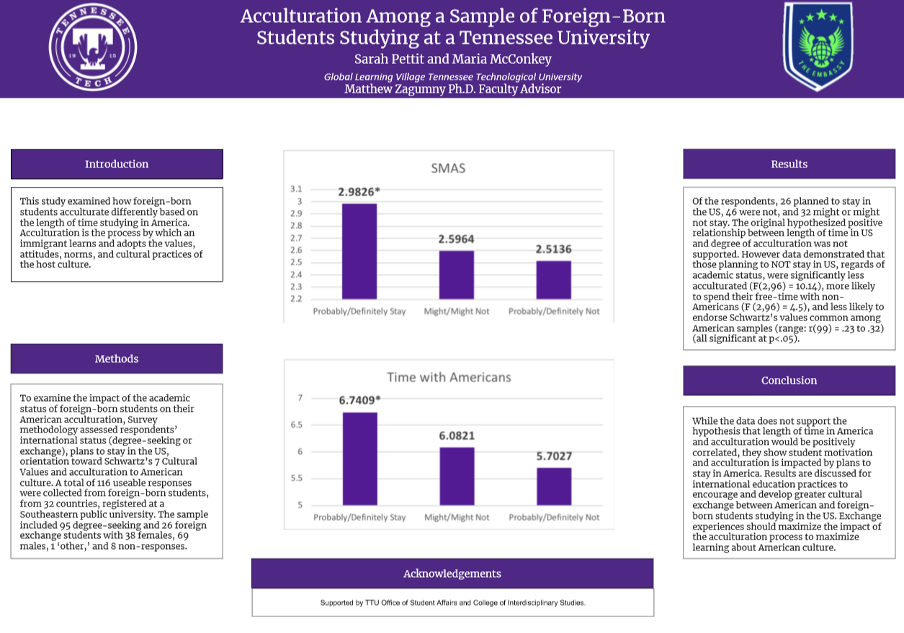

Acculturation Among a Sample of Foreign-Born Students Studying in a Tennessee University
Abstract
This study examined how foreign-born students acculturate differently based on the length of time studying in America. Acculturation is the process by which an immigrant learns and adopts the values, attitudes, norms, and cultural practices of the host culture (Chun, Organista, & Marin, 2002). To examine the impact of the academic status of foreign-born students on their American acculturation, Survey methodology assessed respondents’ international status (degree-seeking or exchange), plans to stay in the US, orientation toward Schwartz’s 7 Cultural Values (Schwartz, 1992), and acculturation to American culture (modified Stephenson Multigroup Acculturation Scale; Stephenson, 2000). A total of 116 useable responses were collected from foreign-born students, from 32 countries, registered at a Southeastern public university. The sample included 95 degree-seeking and 26 foreign exchange students with 38 females, 69 males, 1 ‘other,’ and 8 non-responses. Of the respondents, 26 planned to stay in the US, 46 were not, and 32 might or might not stay. The original hypothesized positive relationship between length of time in US and degree of acculturation was not supported. However data demonstrated that those planning to NOT stay in US, regards of academic status, were significantly less acculturated (F(2,96) = 10.14), more likely to spend their free-time with non-Americans (F (2,96) = 4.5), and less likely to endorse Schwartz’s values common among American samples (range: r(99) = .23 to .32) (all significant at p<.05). While the data do not support the hypothesis that length of time in America and acculturation would be positively correlated, they show student motivation and acculturation is impacted by plans to stay in America. Results are discussed for international education practices to encourage and develop greater cultural exchange between American and foreign-born students studying in the US. Exchange experiences should maximize the impact of the acculturation process to maximize learning about American culture.
NCUR 2018
Sarah Pettit and I presented our research at the National Conference on Undergraduate Research at the University of Central Oklahoma on April 5, 2018.
To View on NCUR's Website
1. Go to https://www.cur.org/ncur_2018/account/?search=true. 2. Type "McConkey" in Presenter Name:. 3. Click on Search Abstracts. 4. Click on "ACCULTURATION AMONG A SAMPLE OF FOREIGN-BORN STUDENTS STUDYING IN A TENNESSEE UNIVERSITY".